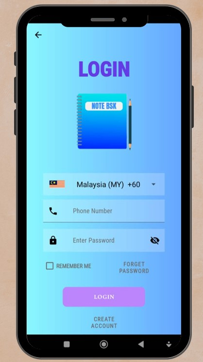
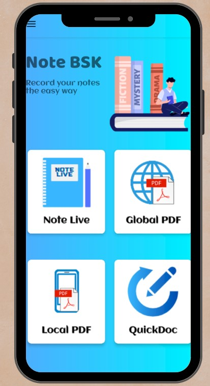
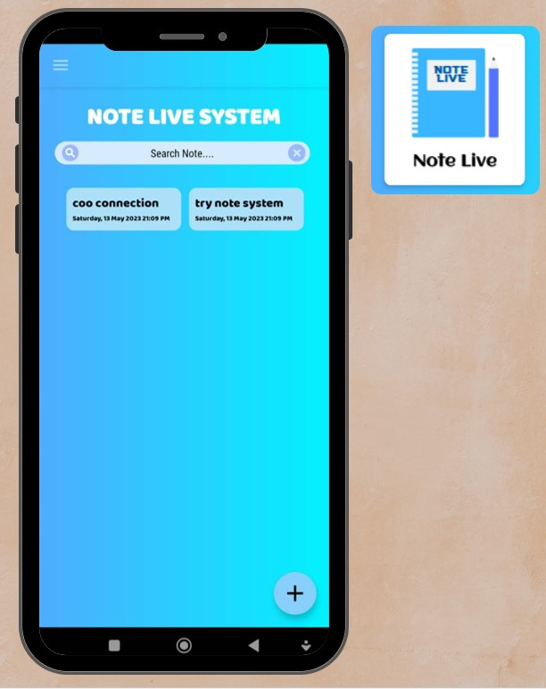
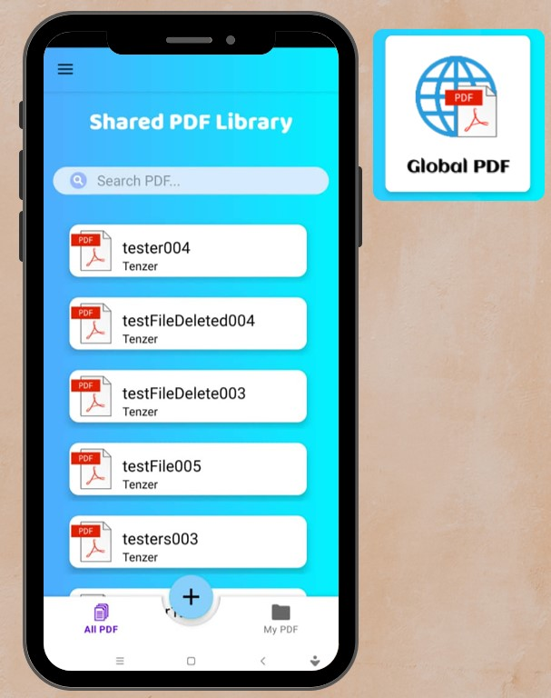
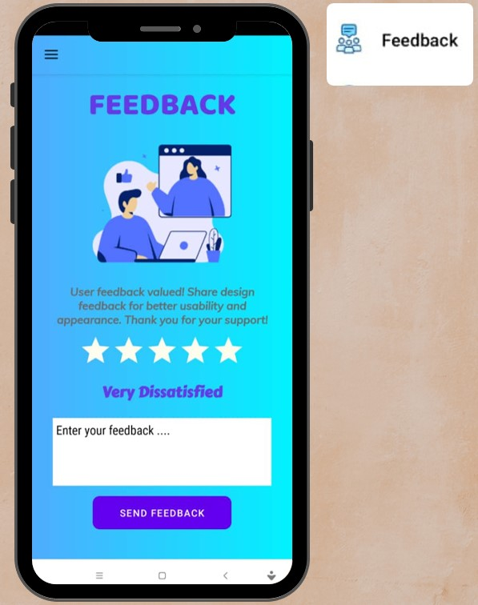
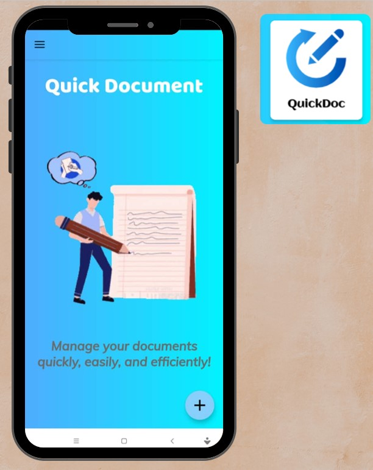

Tools Used
- Android Studio
- Java
- XML
- Firebase
Project Details
Mobile application project developed during POLIMAS, highlighting my main contribution to the system.

This project presents the development of the E-Note System Mobile Application, a mobile note-taking application developed during POLIMAS as part of a group project. My main contribution focused on supporting the mobile application development, interface design, PDF-related features, and project documentation. The application allows users to create and manage notes, access shared PDF materials, upload local PDF files, and organize learning resources efficiently. It also includes login and registration, feedback, settings, and PDF-related features to improve usability and user experience.
App Screenshots
A collection of key screens from the E-Note System Mobile Application.





